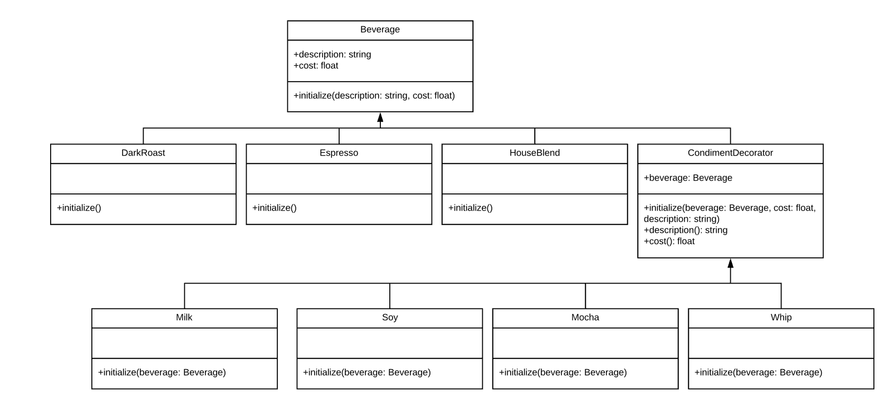

Decorator Method Pattern¶ ↑
This documentation was developed as part of a programming activity for the Software Design and Architecture course (TC3049), at the Tecnológico de Monterrey, Campus Estado de México.
Authors¶ ↑
-
A01372812 José Javier Rodríguez Mota
-
A01379228 Adrián Méndez López
Overview¶ ↑
Decorator Pattern enables you to easily add an enhancement to an existing object. The Decorator pattern also allows you to layer features atop one another so that you can construct objects that have exactly the right set of capabilities that you need for any given situation
The UML diagram for this programming activity is as follows:

To test the program, inside the src folder type the following instruction at the command line:
ruby -I . -w coffee_test.rb
References¶ ↑
-
R. Olsen. Design Patterns in Ruby. Addison-Wesley,
2007.